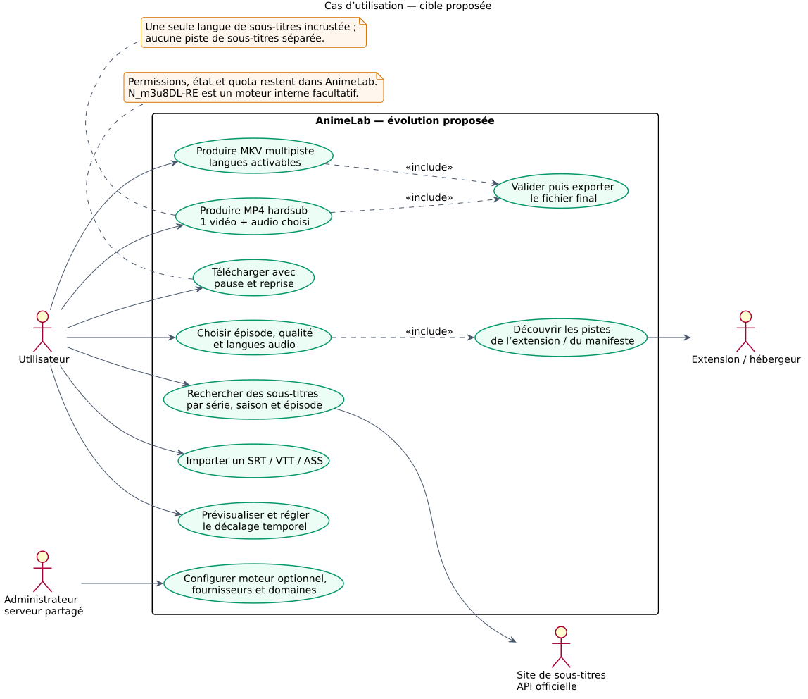
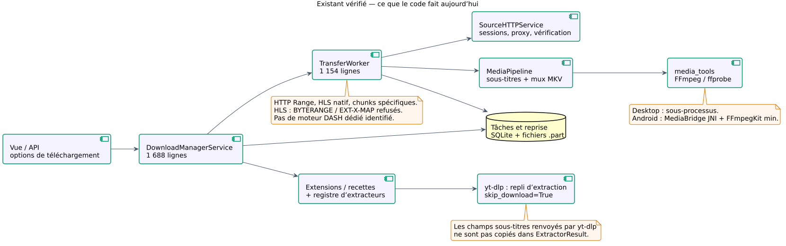
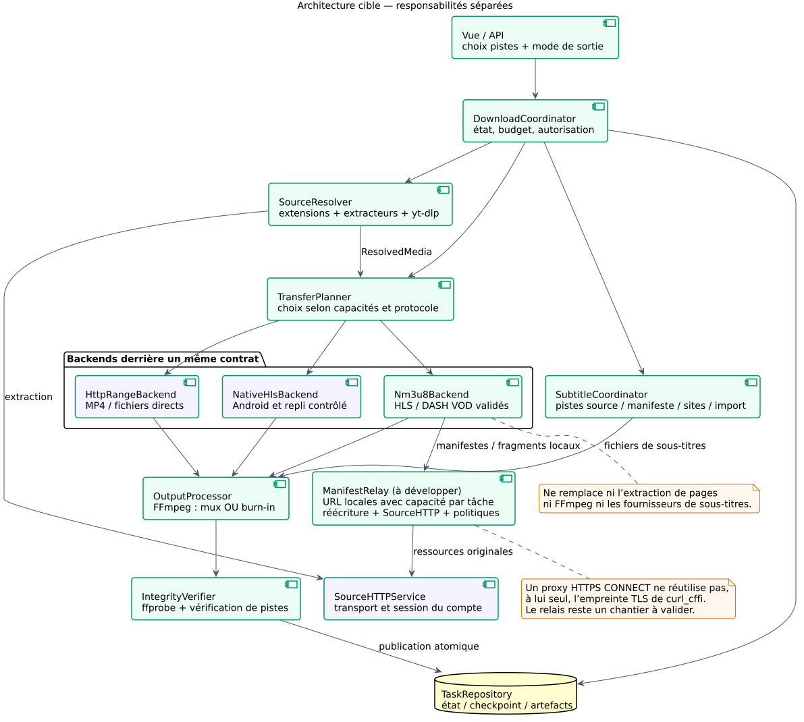
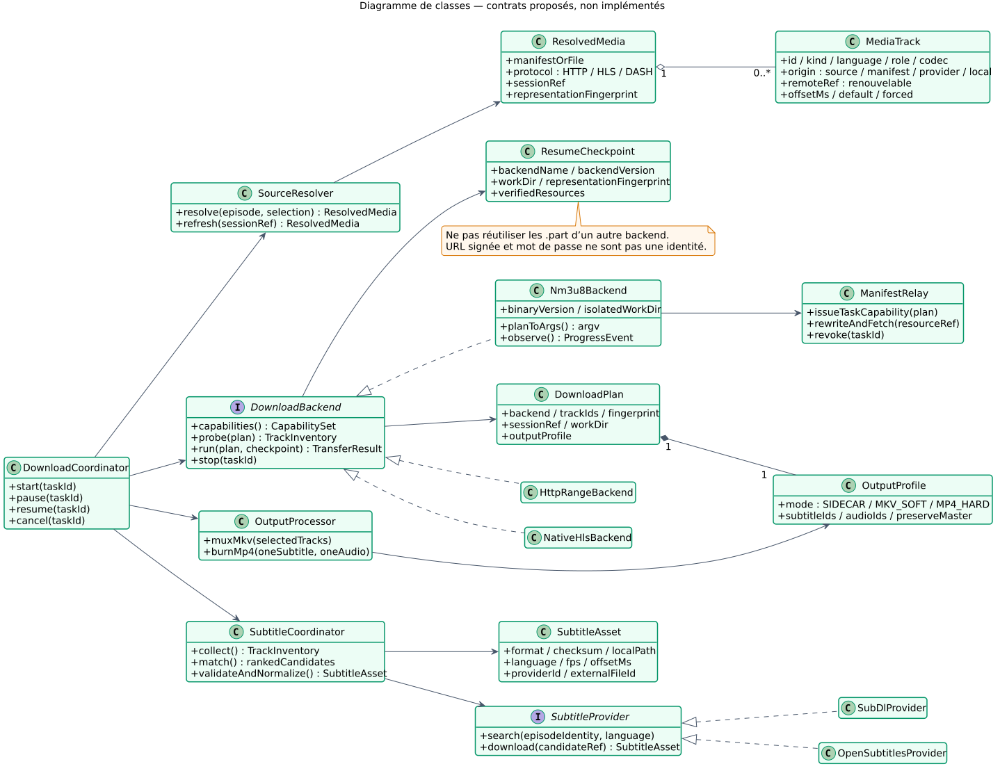
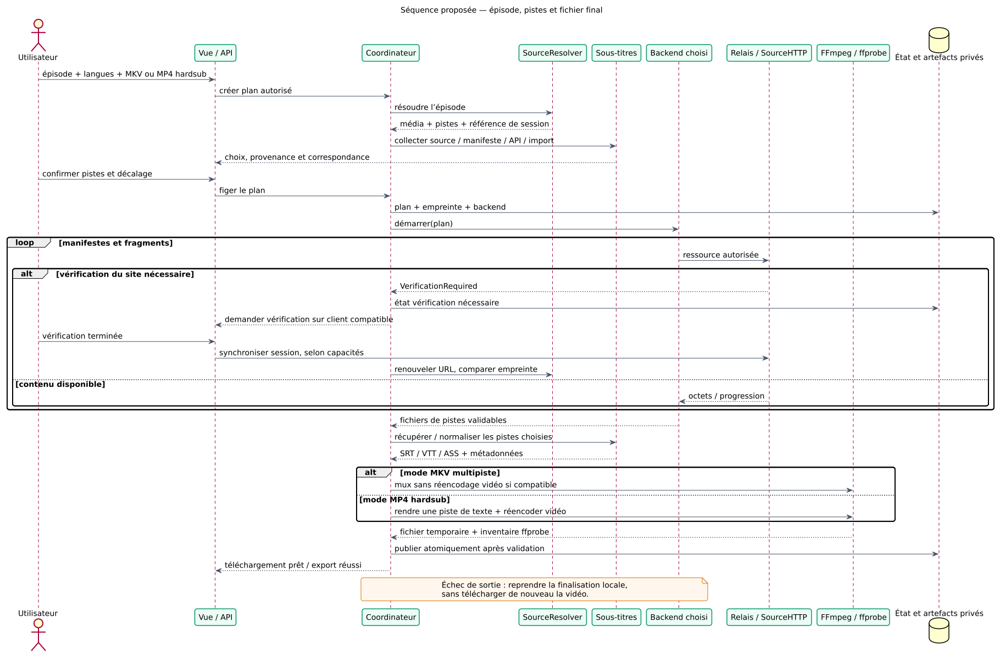
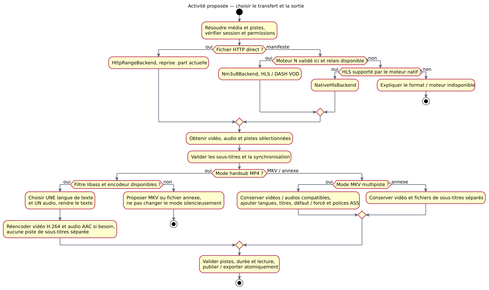
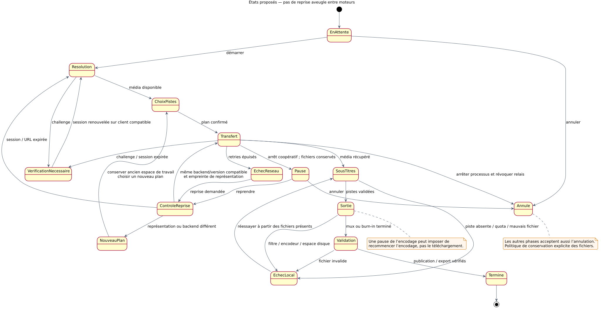
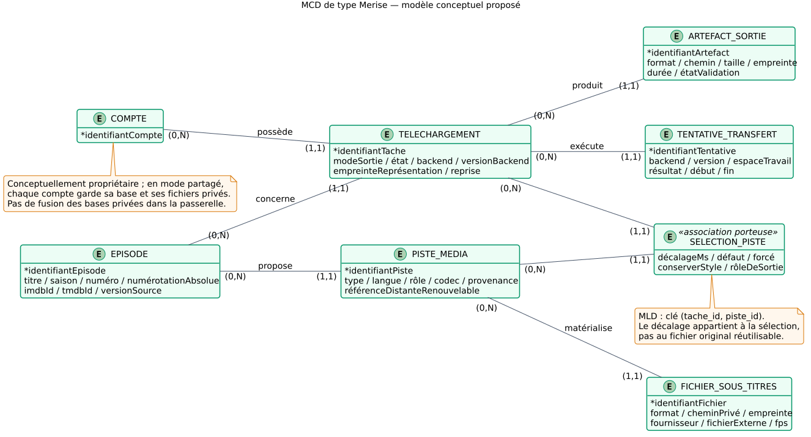
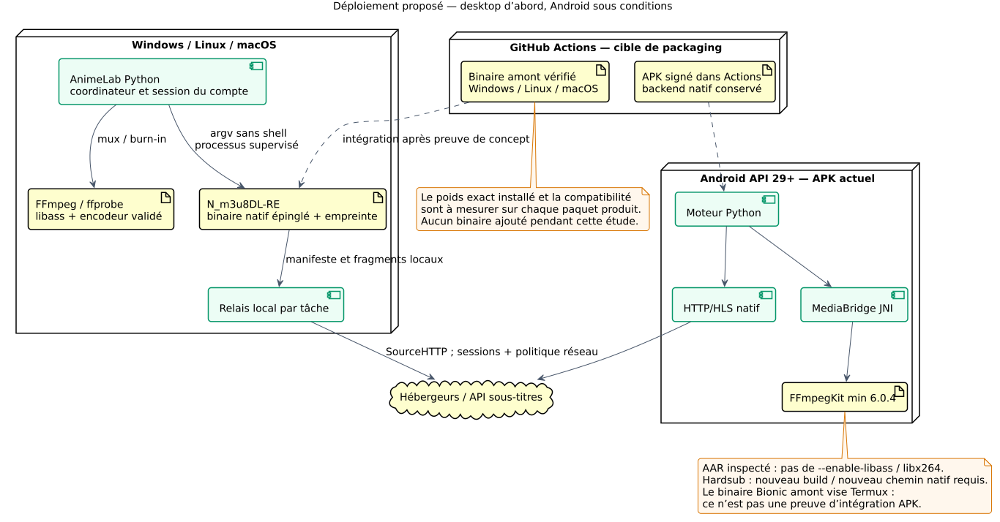

Cas d’utilisation — cible proposée
Cas d’utilisation · Socle P1–P9 réalisé ; P13/P15 non retenus ; P14 implémenté, validation Android en attente

Références vérifiées dans le code
- SubtitleTrack —
animelab/api_contracts.py
3 classes · 1 cas d’utilisation · 1 séquences · 1 déploiements · 3 proposition. Le diagramme violet décrit l’existant ; les vues vertes sont des propositions. Binaire N_m3u8DL-RE évalué sous Linux x64 ; non adopté en production.
Étude de faisabilité et plan de migration · Révision analysée : 1cea1983ec741c502cf5241d3b5ebdfacb38330a.
27 octobre 2026 · Télécharger tout le dossier · Preuve FFmpeg locale · Priorités d’implémentation P1 à P15 · Livraison P1–P5 · Livraison P6–P7 · Livraison P8 et validations · Livraison P9 et synchronisation · Mesures Alass
Bilan P10–P13 · Mesures du vrai binaire · Décision P12 · Licence amont MIT
Bilan P14–P15 · Validation Android et décision Bionic : JNI implémenté localement, essais Android/CI encore requis.
9 diagrammes affichés
Cas d’utilisation · Socle P1–P9 réalisé ; P13/P15 non retenus ; P14 implémenté, validation Android en attente

animelab/api_contracts.pyClasses · Architecture observée

animelab/services/download_manager.pyanimelab/services/download_stages/transfer.pyanimelab/services/download_stages/transfer.pyanimelab/services/download_stages/media.pyanimelab/services/extractors/ytdlp_fallback.pyProposition · Socle P1–P9 réalisé ; P13/P15 non retenus ; P14 implémenté, validation Android en attente

animelab/services/source_http.pyanimelab/media_policy.pyanimelab/services/download_stages/scheduler.pyClasses · Socle P1–P9 réalisé ; P13/P15 non retenus ; P14 implémenté, validation Android en attente

animelab/models/download_task.pyanimelab/services/subtitle_service.pyanimelab/services/recipe_runtime.pySéquences · Socle P1–P9 réalisé ; P13/P15 non retenus ; P14 implémenté, validation Android en attente

animelab/services/aniyomi_container.pyanimelab/services/download_stages/media.pyProposition · Socle P1–P9 réalisé ; P13/P15 non retenus ; P14 implémenté, validation Android en attente

animelab/services/download_stages/media.pyProposition · Socle P1–P9 réalisé ; P13/P15 non retenus ; P14 implémenté, validation Android en attente

animelab/services/download_stages/state.pyClasses · Socle P1–P9 réalisé ; P13/P15 non retenus ; P14 implémenté, validation Android en attente

animelab/models/download_task.pyDéploiement · Socle P1–P9 réalisé ; P13/P15 non retenus ; P14 implémenté, validation Android en attente

animelab/media_tools.pyandroid/app/src/main/java/com/animan/app/MediaBridge.ktAucun diagramme ne correspond à ce filtre.